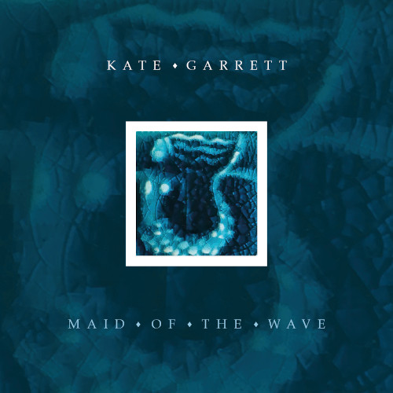

There was something indescribably vital about Kate Garrett. Her very existence was a challenge to embrace life. She would hold your gaze with an unswerving intensity, make you feel that, at that moment, you were the only other person in the world and dare you to meet her on her terms.

Born in Dorset in the final dimming days of 1971 she was a daughter of the English countryside, a product of its rhythms and cadences. Then, moving to Oxford in the early 90s, she put on her city skin and, like an urban fox, made it her home.
Having played in a duo as a teenager with Polly Harvey, her musical path took her through the alternative rock of The Mystics, the wayward acapella of Trio Hysteria and finally to The Kate Garrett Band where her own music finally took centre stage. On the way she made an indelible impression on those she gave her time to, especially through the Young Women’s Band Project in Oxford.
On her final EP, the first three tracks, Maid of the Wave, The Leaving and Diamonds are a reminder of the molten-glass quality of her voice. At once one can hear echoes of some of Britain’s greatest songwriters and yet it’s wholly Kate, every bit their equal, every inch herself. They were recorded in late 2008 at the home she shared with her husband and musical collaborator Barney Morse Brown in Cumnor.
Kate recorded the last of the four, The Rest Will Follow, at her final concert, in Cumnor outside Oxford, on 21st February 2009 (other voices were added later for this EP). That clarity has gone. She is struggling to sing. ‘Let go. The rest must follow. ‘Cos I’m in heaven now.’ Kate died almost exactly three months later, on 22nd May, taken by breast cancer. And yet somehow she never left. Play this EP and she’s right back with us, challenging us to live without fear, without compromise. By doing so we make space for a little piece of her to live on in us all.
Jolph Kent February 2019
Video: Dave Motion
Kate Garrett's Releases
Kate Garrett's music is available to buy/stream in all the usual places, including Spotify, Apple Music, YouTube Music, and Amazon Music.
All money generated by the sales and streaming of Kate Garrett's music will be donated to Young Women's Music Project.
Maid of the Wave

The first three songs on Maid of the Wave were recorded at Kate's home in Cumnor by Rob Harbron. The final track, The Rest Will Follow, which Kate had not been able to record before her death, is taken from Colin Griffiths' recording of her final concert with additional choir parts arranged by Claudia Gibson and recorded either at Will Gibson's studio or emailed in by participants from further afield. All four songs we're then mixed by Will Gibson at his studio.
Released 2020.
Track listing:
- Maid of the Wave
- The Leaving
- Diamonds
- The Rest Will Follow (Live)
King of the Birds
Recorded in her sitting room in West Oxford by Rob Harbron (English Acoustic Collective, Chris Wood), Kate Garrett's timeless songwriting is beautifully woven with strings from Barney Morse-Brown and Lucy Roberts (Village Band), concertina from Rob and an interesting use of Indian harmonium and glockenspiel.
Released 2009.
Track listing:
- Carole's Song
- King of the Birds
- Four Winds
Homefront EP
Recorded as The Kate Garrett Band (Barney Morse-Brown on cello, Gabriel Solomons on drums) and produced by Andy Lovegrove at Courtyard Studios, Oxfordshire.
Released 2005, originally on Beard Museum.
Track listing:
- Homefront
- No Place Like Us
- Star
- The Boatman
Vertigo
Vertigo combines many of Kate Garrett's past influences from acoustic roots to the sonic intensity of Mystics pop.
Recording started on three tracks with Jonathan Nesmith at his studio in the USA, then when Kate was back in the UK these songs where worked up a bit more and nine more songs recorded with Will Gibson at his studio in Oxfordshire.
Musicians playing on the album include Mark Wood, Chris Gale, Tim Harries, Jonathan Nesmith, Kyle Eastwood, Andy Crowdy, Will Gibson, Abbie Lathe and Lucy Roberts.
Released 2000.
Track listing:
- Coming Home
- Falling Over
- Satisfied
- Lost
- She
- Darling
- Star
- When Is The Man?
- Holding On
- Sleeping Still
- Down To Me
- Inside